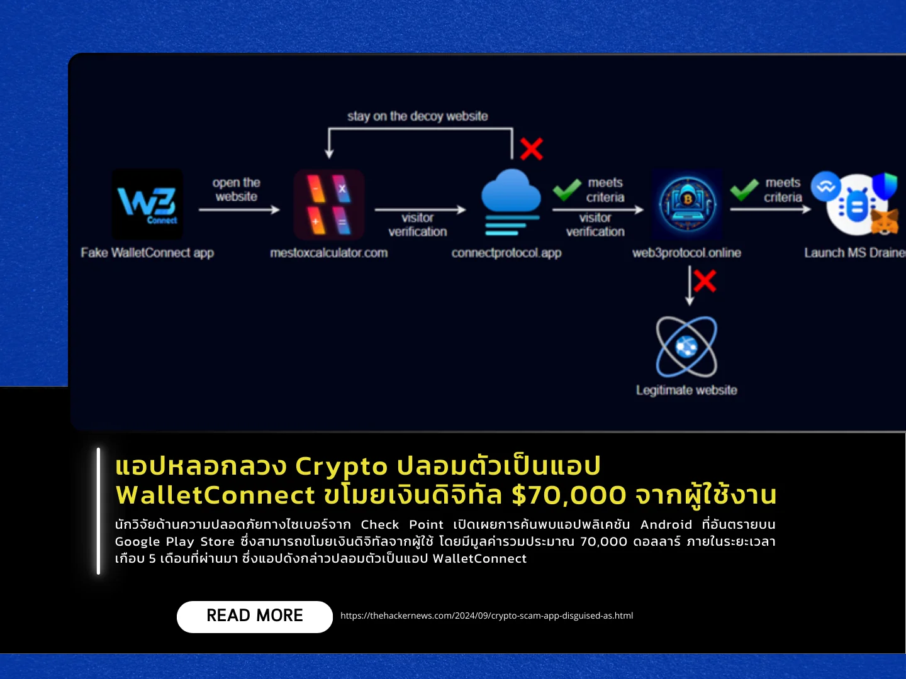

เผยแพร่เมื่อ: 30 กันยายน 2567
นักวิจัยด้านความปลอดภัยทางไซเบอร์จาก Check Point เปิดเผยการค้นพบแอปพลิเคชัน Android ที่อันตรายบน Google Play
Store ซึ่งสามารถขโมยเงินดิจิทัลจากผู้ใช้ โดยมีมูลค่ารวมประมาณ 70,000 ดอลลาร์ ภายในระยะเวลาเกือบ 5
เดือนที่ผ่านมา ซึ่งแอปดังกล่าวปลอมเป็นแอป WalletConnect ซึ่งเป็นโปรโตคอลโอเพ่นซอร์สที่ถูกต้อง
เพื่อหลอกให้ผู้ใช้งานที่อาจไม่รู้เท่าทัน ทำการดาวน์โหลดผ่านแอปปลอมนี้ โดยแอปนี้สามารถสะสมยอดดาวน์โหลดมากกว่า
10,000 ครั้ง และติดอันดับสูงในการค้นหา ซึ่งเกิดจากการสร้างบทวิจารณ์ปลอมและการสร้างแบรนด์ที่ดูน่าเชื่อถือ
แคมเปญนี้ได้ปล่อยแอปปลอมออกมาหลายตัว เช่น “Mestox Calculator,” “WalletConnect – DeFi & NFTs” และ
“WalletConnect – Airdrop Wallet” ขณะนี้แอปเหล่านี้ถูกลบออกจาก Google Play Store แล้ว
แต่ยังคงมีการดาวน์โหลดจากตลาดแอปอื่น ๆ ที่ไม่ได้ถูกควบคุม
ซึ่งแสดงให้เห็นถึงอันตรายจากการดาวน์โหลดแอปจากแหล่งอื่นที่ไม่เป็นทางการ โดยข้อมูลจาก SensorTower
แสดงให้เห็นว่าแอปเหล่านี้ได้รับความนิยมในประเทศไนจีเรีย โปรตุเกส และยูเครน
แอปปลอมถูกออกแบบมาเพื่อเปลี่ยนเส้นทางผู้ใช้ไปยังเว็บไซต์ปลอม ซึ่งเลียนแบบ Web3Inbox
ผู้ใช้งานที่ไม่ตรงตามเกณฑ์จะถูกส่งไปยังเว็บไซต์จริงเพื่อหลีกเลี่ยงการตรวจสอบ นอกจากนี้
แอปยังใช้เทคนิคป้องกันการวิเคราะห์และแก้ไขจุดบกพร่อง องค์ประกอบหลักของมัลแวร์ในแอปคือ MS Drainer
ซึ่งขโมยเงินดิจิทัลจากเหยื่อโดยหลอกให้ผู้ใช้งาน ลงนามในธุรกรรมหลายรายการ
เมื่อเหยื่อป้อนข้อมูลการเชื่อมต่อกระเป๋าเงิน
ข้อมูลดังกล่าวจะถูกส่งไปยังเซิร์ฟเวอร์ของผู้โจมตีเพื่อดำเนินการโอนเงินไปยังบัญชีที่ควบคุมโดยผู้โจมตี
Check Point ยังพบแอปอันตรายอื่น ๆ ที่มีฟีเจอร์คล้ายกัน เช่น “Walletconnect | Web3Inbox”
ซึ่งมียอดดาวน์โหลดมากกว่า 5,000 ครั้ง
เหตุการณ์นี้ชี้ให้เห็นถึงความซับซ้อนที่เพิ่มมากขึ้นของกลวิธีการทางอาชญากรรมทางไซเบอร์
โดยเฉพาะอย่างยิ่งในแวดวงการเงินแบบกระจายอำนาจ
ซึ่งผู้ใช้งานมักพึ่งพาเครื่องมือและโปรโตคอลของบุคคลที่สามเพื่อจัดการสินทรัพย์ดิจิทัลของตน
แหล่งข่าว https://thehackernews.com/2024/09/crypto-scam-app-disguised-as.html